Cosmetic Tox Treatment Areas
Face • Neck • Chest • Body
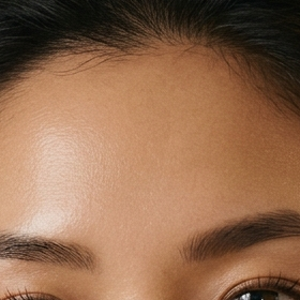
Forehead Lines
Softens horizontal forehead lines while maintaining natural movement.
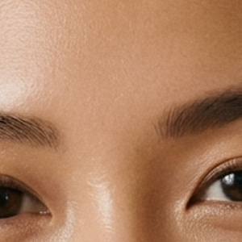
Glabellar Lines
Reduces frown-line appearance between the brows.
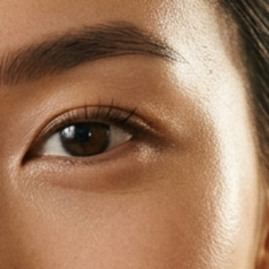
Crow's Feet
Smooths fine lines around the eyes.
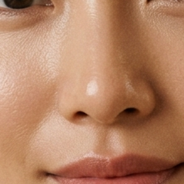
Bunny Lines
Refines nose wrinkling during expression.
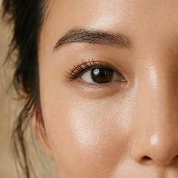
Brow Lift
Creates a subtle lifted brow appearance.

Lip Flip
Enhances upper-lip balance with a subtle outward roll.

Gummy Smile
Softens excessive upper-lip elevation while smiling.
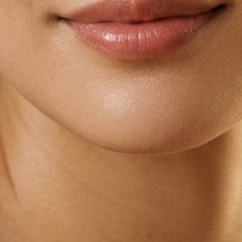
Mentalis / Pebble Chin
Improves chin dimpling and lower-face tension.
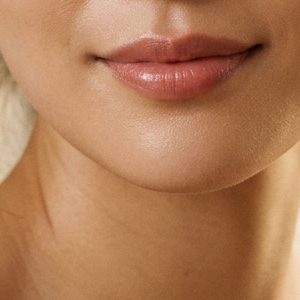
Marionette Lines
Softens downward-pulling expression around the mouth.
Masseter / Jaw Slimming
Slims lower-face contour. Popular in Korean facial balancing.
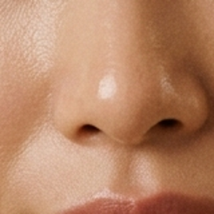
Nasal Flare Reduction
Refines nostril flaring during expression.
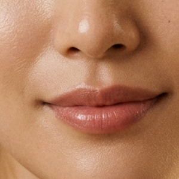
Perioral Lines
Smoker's lines around the mouth area.
Neck & Chest
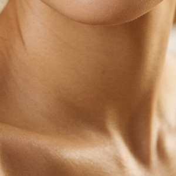
Platysmal Bands
Softens visible vertical neck bands.

Horizontal Neck Lines
Improves movement-related neck creasing.
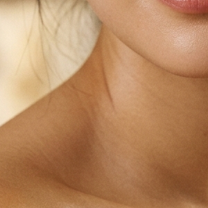
Nefertiti Lift
Refines jawline transition and softens neck tension.
Décolletage Lines
Softens chest wrinkles and repetitive movement lines.
Body Tox
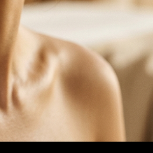
TrapTox
Relaxes trapezius muscles for softer shoulder contour, reduced upper-body tension, and elongated neck appearance.
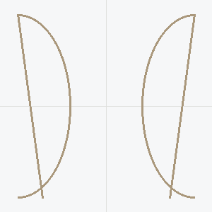
CalfTox
Targets enlarged calf muscle appearance for lower-leg contour refinement. Popular in Korean aesthetic clinics.